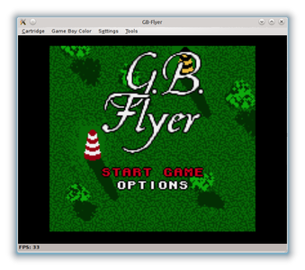

higan
Dieser Artikel wurde für die folgenden Ubuntu-Versionen getestet:
Ubuntu 14.04 Trusty Tahr
Zum Verständnis dieses Artikels sind folgende Seiten hilfreich:
Ausbaufähige Anleitung
Dieser Anleitung fehlen noch einige Informationen. Wenn Du etwas verbessern kannst, dann editiere den Beitrag, um die Qualität des Wikis noch weiter zu verbessern.
Anmerkung: Artikel bezieht nahezu vollständig auf bsnes. Seit der Weiterentwicklung zu higan, gab es zahlreiche Änderungen.
higan  ist ein Emulator, der zunächst nur das Super Nintendo Entertainment System (kurz SNES) emulierte. Obwohl das Projekt im Vergleich zum ehemaligen Platzhirsch ZSNES noch sehr jung ist, hat sich higan innerhalb kurzer Zeit zum Non plus ultra unter den SNES-Emulatoren gemausert. Dem Entwickler ist mittlerweile kein Spiel mehr bekannt, das nicht völlig fehlerfrei unter higan abläuft.
ist ein Emulator, der zunächst nur das Super Nintendo Entertainment System (kurz SNES) emulierte. Obwohl das Projekt im Vergleich zum ehemaligen Platzhirsch ZSNES noch sehr jung ist, hat sich higan innerhalb kurzer Zeit zum Non plus ultra unter den SNES-Emulatoren gemausert. Dem Entwickler ist mittlerweile kein Spiel mehr bekannt, das nicht völlig fehlerfrei unter higan abläuft.
Seit einigen Versionen werden auch andere Nintendo-Konsolen und Handhelds unterstützt, darunter NES, Game Boy, Game Boy Color, Game Boy Advance. Die Emulation dieser Systeme hat jedoch noch nicht das gleiche Niveau wie die des SNES.
Die akkurate Emulation wird einer extrem hohen Prozessorbelastung geschuldet, denn im Gegensatz zu seinen Artgenossen, emuliert higan ununterbrochen die komplette Hardware der Konsole. Die Genauigkeit der Emulation -und die damit einhergehende Prozessorbelastung kann zwar durch die Wahl verschiedener Profile etwas herabgesetzt werden (siehe Abschnitt Profile auswählen), trotzdem sollte der Prozessor bzw. dessen Kerne einen Takt im Bereich 2Ghz oder mehr aufweisen (higan arbeitet nicht parallelisiert).
Hinweis:
Vor Ubuntu 14.04 hieß das Programm bsnes.
|  |
| GB-Flyer |
Installation¶
Seit Ubuntu 12.04 Precise Pangolin findet sich higan in den Paketquellen und ist für 64-Bit-Systeme sogar der einzige, noch verfügbare SNES-Emulator. Wie einige seiner Derivate, unterstützt auch higan OpenGL für die Hardwarebeschleunigung über die Grafikkarte. Diese fällt jedoch wegen der hohen Prozessorbelastung deutlich mehr ins Gewicht als bei anderen Emulatoren. Es muss also ein geeigneter Grafikkarten-Treiber installiert sein. Bedauerlicherweise rät der Entwickler von den freien Treibern für nVidia- und ATI/AMD-Karten ab.
Der Emulator kann über die Paketverwaltung installiert [1] werden.
Ab Ubuntu 14.04:
higan (universe)
 mit apturl
mit apturl
Paketliste zum Kopieren:
sudo apt-get install higan
sudo aptitude install higan
Profile auswählen¶
Das Paket verwendet standardmäßig das "compatibility"-Profil, das im allgemeinen zum Spielen empfohlen wird. Das "accuracy"-Profil beansprucht deutlich mehr Rechenleistung und der Unterschied ist nur in weniger als einer Handvoll von Spielen bemerkbar. Der eigentliche Zweck des "accuracy"-Profils ist es, die Funktionsweise der Spielkonsole möglichst genau zu dokumentieren. Mit folgendem Befehl kann das Profil im Nachhinein geändert werden:
Ab Ubuntu 14.04:
sudo update-alternatives --config higan
Folgende Profile stehen zur Auswahl:
| Profile | |
| Profil | Beschreibung |
accuracy | Höchste Genauigkeit mit hoher Prozessorbelastung (mindestens 2Ghz nötig) |
compatibility | Guter Kompromiss zwischen Genauigkeit und Geschwindigkeit (ca. 1,5Ghz nötig) |
performance | Geringe Genauigkeit und dadurch sehr fehleranfällig. Entwickler rät von Benutzung ab. |
Benutzung¶
Nach der Installation kann higan über den Eintrag im "Spiele"-Menü gestartet werden. Über den Menüeintrag "System -> Load Cartridge..." werden ROMs geladen.
Hinweis:
Die allermeisten ROMs müssen für das veraltete bsnes zuerst aufbereitet werden, bevor sie geladen werden können. Siehe dazu bsnes-purify / Snespurify. higan erledigt das automatisch beim Importieren der ROMs.
Vollbildmodus¶
Der Vollbildmodus wird mit F11 de-/aktiviert.
Tastaturbelegung¶
Die Tasten der Tastatur werden wie folgt den SNES-Tasten zugeordnet:
| Steuerung | |||
| Taste | SNES-Taste | Taste | SNES-Taste |
| ← , ↑ , → , ↓ | links, hoch, rechts, runter | ||
| S | X | X | A |
| A | Y | Z | B |
| D | L | C | R |
| ⏎ | Start | # | Select |
Konfiguration¶
Die Konfiguration kann im Menü "Settings" vorgenommen werden. Die Tastatur- bzw. Gamepadbelegung wird unter "Input Settings..." eingestellt.
Problembehebung¶
Hinweis:
Folgendes gilt nur noch für veraltete Versionen von bsnes wie die aus den Paketquellen von Ubuntu 12.04.
Ein häufiger auftretendes Problem ist ein Knacken im Ton und/oder ein zerreißendes Bild (tearing), besonders wenn das accuracy-Profil benutzt wird. Ist man sich sicher, dass genügend Rechenkraft zur Verfügung steht, liegt es meist an einer schlechten Balance zwischen der Audio-Abtastrate und der Bildwiederholfrequenz vom Monitor. Leider kann das Problem nur durch Herumprobieren gelöst werden:
Im Hauptfenster unter "Settings" finden sich die Punkte "Synchronize Video" und "Synchronize Audio"; Bei mindestens einem(!) von beiden muss der Haken entfernt werden, da die automatische Regelung ja eh nicht richtig funktioniert. Anschließend wird mit "Settings/Configuration" zu den Einstellungen gewechselt; Unter dem linken Punkt "Audio" finden sich die Regler, mit denen die angesprochene Balance von Hand ausgependelt werden kann. In neueren Versionen von higan gibt es mehrere Regler, nämlich einen für jedes unterstützte System. Während einige Regler klar benannt sind (GB=Game Boy / NES etc.), versteckt sich das SNES hinter der Bezeichnung "SPC". Der jeweilige Regler befindet sich in der Mitte. Dieser sollte während der laufenden Emulation nun stückweise und in kleinen Schritten nach links verschoben werden, wenn es eher Probleme mit dem Ton gibt, und nach rechts bei Bildproblemen. Wichtig ist, dass man nach jedem Verschieben erst einige Sekunden abwartet und sich die Emulation anschaut/anhört.
Hilft dies nicht, sollte man die Haken bei den automatischen Synchronisierungen ("Settings" im Hauptfenster) anders setzen und es nochmal probieren. Auch könnte es helfen, in den Einstellungen unter dem Punkt "Advanced" die Option "Disable window compositor" auf "Always" zu setzen.
bsnes-purify / Snespurify¶
Die Geräte, mit denen Spiele von ihren Steckmodulen auf den PC überspielt werden, benutzen kein einheitliches Dateiformat. Obendrein müllen sie die ROMs mit unnützen Metadaten voll. Der Entwickler von higan hat diesem Durcheinander den Kampf angesagt, indem der Emulator sich anfangs konsequent weigerte, derartige ROMs zu laden. Die Dateien mussten daher zunächst für bsnes aufbereitet werden. Seit der Reorganisation des Projekts erledigt der Emulator diesen Schritt automatisch
Für ältere Versionen ist das externe Programm "Snespurify" für die Aufbereitung der ROMs nötig, welches bei einer Installation aus den Paketquellen bereits mitgeliefert wird, allerdings unter dem Namen bsnes-purify vorliegt.
Benutzung¶
Die neuste Version von Snespurify wird über die Kommandozeile bedient. Der Befehl lautet:
bsnes-purify output PFAD/ZU/ALTEN/ROMS/ PFAD/ZU/NEUEN/ROMS/
Anschließend wurde für jedes ROM ein eigener Ordner angelegt, in dem sich die entpackten Dateien befinden. Diese Ordner können nun unter bsnes ausgewählt und die enthaltenen Spiele gestartet werden. Sollte kein Ordner nach dem Aufruf angelegt worden sein, konnte Snespurify das ROM nicht entpacken.
- Erstellt mit Inyoka
-
 2004 – 2017 ubuntuusers.de • Einige Rechte vorbehalten
2004 – 2017 ubuntuusers.de • Einige Rechte vorbehalten
Lizenz • Kontakt • Datenschutz • Impressum • Serverstatus -
Serverhousing gespendet von